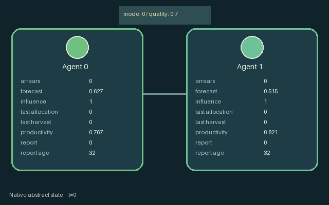

GI059 · Periodic allocation voting with endogenous voting weight

A common production machine allocates 75 percent of its capacity to the currently favored role and 25 percent to the other. Actual production also depends on shared machine quality and each role's current productivity. Production accumulates in capped personal stocks. Actions are 0 harvest personal stock, 1 spend influence voting to favor role zero, 2 spend influence voting to favor role one, 3 repair the shared machine, and 4 survey the other's upcoming productivity. All five actions remain legal.
Identity and original contract
2 independently actionable roles; 5 discrete commands per role; 16 native observation columns per role; original horizon 32 steps. Declared per-step reward range: -1.0 to 1.0. Observation regime: source_defined.
Source SHA-256: eb16523323a6d556aa672297a613c255cb37f5a353df511e987a85e1bddae73f
The objective, rewards, population, map and horizon remain original. A preview is not a success claim.
Objective and gameplay
A common production machine allocates 75 percent of its capacity to the currently favored role and 25 percent to the other. Actual production also depends on shared machine quality and each role's current productivity. Production accumulates in capped personal stocks. Actions are 0 harvest personal stock, 1 spend influence voting to favor role zero, 2 spend influence voting to favor role one, 3 repair the shared machine, and 4 survey the other's upcoming productivity. All five actions remain legal.
Ending: No early terminal; original t >= 32 horizon.
What this game explores
Resource commons & externalities: An action changes a persistent resource or burden that another role also encounters. Compare extraction with maintenance and record the downstream resource trajectory.
Information, sensing & communication: Who knows a fact, when it was measured, and whether it was communicated are separate state variables. Test memory or communication using only the same role-visible evidence.
Commitment, exchange & governance: Promises consume time, liquidity, access or material. Separate an announced agreement from a binding commitment and from its eventual delivery; log cancellation and expiry too.
Complementary production & service: A useful outcome requires ordered stages, scarce equipment or another role's capability. Measure real completed products and resource circulation rather than counting intermediate actions as success.
These are questions supported by rule structure, not observed learning effects.
Play it: operating walkthrough
crucibles play --game gi059Keep Python running and open its printed address. Select this game, set a seed and press Create session. The game itself is always English.
Assign a role range to Host with Assign / take over, or Assign all roles. Invite a second participant with Create player invitation, then assign a disjoint subset. Every original role is available.
For every owned role choose a legal command and press Queue. Arrow keys / WASD queue a declared directional action for the current role camera when available. Space or Advance one joint step advances everyone together. Non-directional games use the selectors.
Unqueued roles use the labelled untrained uniform-legal policy. Take over or release roles before the next step without resetting. Full-state debug is privileged and permanently logged; role cameras preserve permissions. Close the session to retain logs. Server restart does not restore sessions.
Complete command reference
IDs and English labels exactly match the manifest. Availability depends on role, resources, location and phase. An available action can still have no productive effect.
0·Harvest stock
1·Vote allocation 0
2·Vote allocation 1
3·Repair
4·Survey
Roles and capability identifiers
These original role names describe capabilities, not interchangeable skins. Check each owned role's legal selector before planning handoffs.
agent_0·Original legacy agent; see mechanism and source
agent_1·Original legacy agent; see mechanism and source
Information and observation permissions
Each actor receives its original native observation row. Public state, private fields and delayed messages remain separate.
The GIF is full-state debug and may reveal hidden entities or private state. Train on obs[agent], not the picture, state tree or another role's private row. Field slices and visibility are in the original manifest.
Reinforcement-learning integration
import jax
from crucibles_jaxmarl import make
env = make("gi059")
key = jax.random.PRNGKey(0)
key, rk, ak, sk = jax.random.split(key, 4)
obs, state = jax.jit(env.reset)(rk)
actions = env.sample_actions(ak, state)
obs, state, rewards, dones, info = jax.jit(env.step_env)(sk, state, actions)
done = dones["__all__"]Observations are float32 vectors of width 16; actions are scalar int32; masks have 5 entries. Supply all 2 roles each transition. Masked sampling is an engineering reference, not a trained learner.
step_env retains terminal data without reset. step performs outer autoreset and keeps terminal data in info["raw_state"] and info["raw_observation"]. Use dones["__all__"] for episode boundaries; separate completion, failure and time limit in analysis.
JIT or vmap equal identities and shapes. Split independent reset, policy and transition keys. Group different shapes explicitly; do not shrink the population or horizon. Host rendering stays outside training.
Training questions and fair evaluation
Define valid completion from the objective before fitting. Preserve original rewards and also report real deliveries/services, losses, resource state, unresolved episodes and per-role returns. Animation is not a reward signal.
An action changes a persistent resource or burden that another role also encounters. Compare extraction with maintenance and record the downstream resource trajectory.
Who knows a fact, when it was measured, and whether it was communicated are separate state variables. Test memory or communication using only the same role-visible evidence.
Promises consume time, liquidity, access or material. Separate an announced agreement from a binding commitment and from its eventual delivery; log cancellation and expiry too.
A useful outcome requires ordered stages, scarce equipment or another role's capability. Measure real completed products and resource circulation rather than counting intermediate actions as success.
Compare memory, communication or centralized critics under matched actor information. Declare critic access; keep actor inputs role-filtered. Match partner/opponent distributions, masks, compute and checkpoint selection. Final tests never enter fitting or selection.
Independent training runs or source-pairing blocks are inferential units; episodes from one policy are not independent training replications. Save hashes, keys, versions, device, time and cost. Negative, zero, failed and indeterminate outcomes are valid. No trained checkpoint or target score is supplied.
Classification and evidence
Overlapping editorial labels are reading aids, not proof of novelty, difficulty, strategic equivalence or learning effects.
- Resource commons & externalities
- Evidence
mechanism.md: A common production machine allocates 75 percent of its capacity to the currently favored role and 25 percent to the other. Actual production also depends on shared machine quality and each role's current productivity. Production accumulates in capped personal stocks. Actions are 0 harvest personal stock, 1 spend influence voting to favor role zero, 2 spend influence voting to favor role one, 3 repair the shared machine, and 4 survey the other's upcoming productivity. All five actions remain legal.
- Information, sensing & communication
- Evidence
manifest.actions.4: Survey
- Evidence
mechanism.md: A common production machine allocates 75 percent of its capacity to the currently favored role and 25 percent to the other. Actual production also depends on shared machine quality and each role's current productivity. Production accumulates in capped personal stocks. Actions are 0 harvest personal stock, 1 spend influence voting to favor role zero, 2 spend influence voting to favor role one, 3 repair the shared machine, and 4 survey the other's upcoming productivity. All five actions remain legal.
- Commitment, exchange & governance
- Evidence
manifest.actions.1: Vote allocation 0
- Evidence
manifest.actions.2: Vote allocation 1
- Evidence
mechanism.md: A common production machine allocates 75 percent of its capacity to the currently favored role and 25 percent to the other. Actual production also depends on shared machine quality and each role's current productivity. Production accumulates in capped personal stocks. Actions are 0 harvest personal stock, 1 spend influence voting to favor role zero, 2 spend influence voting to favor role one, 3 repair the shared machine, and 4 survey the other's upcoming productivity. All five actions remain legal.
- Complementary production & service
- Evidence
manifest.actions.3: Repair
- Evidence
mechanism.md: A common production machine allocates 75 percent of its capacity to the currently favored role and 25 percent to the other. Actual production also depends on shared machine quality and each role's current productivity. Production accumulates in capped personal stocks. Actions are 0 harvest personal stock, 1 spend influence voting to favor role zero, 2 spend influence voting to favor role one, 3 repair the shared machine, and 4 survey the other's upcoming productivity. All five actions remain legal.
Source, receipts and preview limits
The world-only English GIF replays saved untrained legal actions through the original kernel. At most 25 actual endpoints include initial and terminal state; no invented interpolation. It is full-state debug, not the role observation.
Original source, observation slices, manifest and mechanism
Native receipt · Presentation receipt
Engineering passes do not establish learning. Nonzero floating differences remain recorded and undetermined; no new tolerance was introduced. Human scores remain unverified.